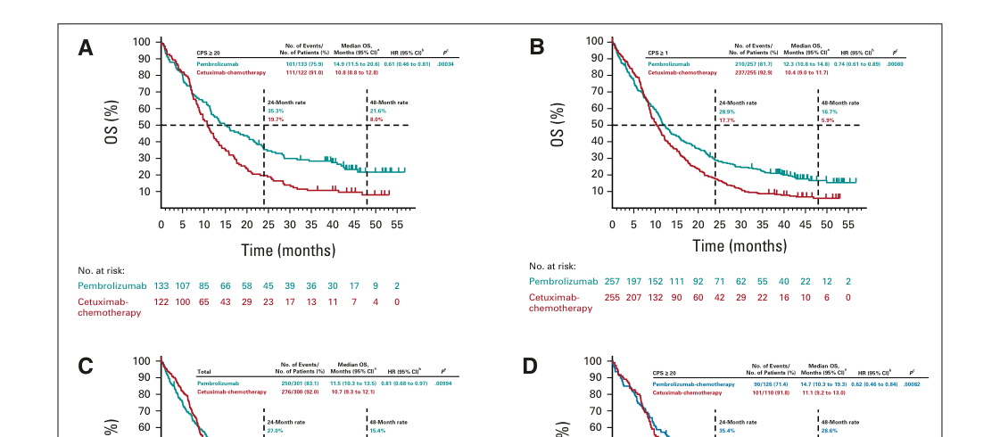

Oral cavity squamous cell carcinoma (OSCC, oral SCC) is a malignant epithelial tumor arising from the mucosal lining of the oral cavity, including the oral tongue, floor of mouth, gingiva, buccal mucosa, hard palate, and retromolar trigone. It is the most common malignancy of the oral cavity and a major subsite of head and neck squamous cell carcinoma. The dominant risk factors are tobacco use, alcohol consumption, and areca (betel) nut chewing, which together account for the majority of cases. Unlike oropharyngeal carcinoma, most oral cavity SCC is HPV-independent and driven by carcinogen-induced mutations in TP53, CDKN2A, and other genes. OSCC frequently develops from precursor lesions (leukoplakia, erythroplakia, oral epithelial dysplasia) and tends to metastasize early to the cervical lymph nodes. Prognosis depends strongly on tumor size, depth of invasion, and nodal status.
Ask a research question about Oral Cavity Squamous Cell Carcinoma. OpenScientist will conduct autonomous deep research using the Disorder Mechanisms Knowledge Base and PubMed literature (typically 10-30 minutes).
Do not include personal health information in your question. Questions and results are cached in your browser's local storage.
name: Oral Cavity Squamous Cell Carcinoma
creation_date: "2026-06-17T00:00:00Z"
category: Complex
description: >-
Oral cavity squamous cell carcinoma (OSCC, oral SCC) is a malignant epithelial
tumor arising from the mucosal lining of the oral cavity, including the oral
tongue, floor of mouth, gingiva, buccal mucosa, hard palate, and retromolar
trigone. It is the most common malignancy of the oral cavity and a major
subsite of head and neck squamous cell carcinoma. The dominant risk factors
are tobacco use, alcohol consumption, and areca (betel) nut chewing, which
together account for the majority of cases. Unlike oropharyngeal carcinoma,
most oral cavity SCC is HPV-independent and driven by carcinogen-induced
mutations in TP53, CDKN2A, and other genes. OSCC frequently develops from
precursor lesions (leukoplakia, erythroplakia, oral epithelial dysplasia) and
tends to metastasize early to the cervical lymph nodes. Prognosis depends
strongly on tumor size, depth of invasion, and nodal status.
disease_term:
preferred_term: oral cavity squamous cell carcinoma
term:
id: MONDO:0004958
label: oral cavity squamous cell carcinoma
parents:
- head and neck squamous cell carcinoma
classifications:
icdo_morphology:
classification_value: Squamous Cell Carcinoma
harrisons_chapter:
- classification_value: ONCOLOGY_HEMATOLOGY
has_subtypes:
- name: Oral Tongue
display_name: Oral Tongue SCC
description: >-
Carcinoma of the anterior two-thirds (mobile portion) of the tongue. The most
common oral cavity subsite, with a tendency toward early depth of invasion
and nodal metastasis. Rising incidence in young patients without classic
tobacco/alcohol exposure.
- name: Floor of Mouth
display_name: Floor of Mouth SCC
description: >-
Carcinoma of the floor of the mouth, strongly associated with tobacco and
alcohol. Close proximity to the mandible and sublingual structures often
leads to early bone or muscle invasion.
- name: Gingiva
display_name: Gingival/Alveolar SCC
description: >-
Carcinoma of the gingiva and alveolar ridge, frequently invading the
underlying mandible or maxilla; may mimic benign periodontal disease.
- name: Buccal Mucosa
display_name: Buccal Mucosa SCC
description: >-
Carcinoma of the inner cheek lining, strongly associated with areca (betel)
nut and smokeless tobacco use, particularly in South and Southeast Asia.
Often arises in a background of oral submucous fibrosis.
- name: HPV-Independent
display_name: HPV-Independent (carcinogen-driven) OSCC
description: >-
The classic and dominant molecular subtype of oral cavity SCC, driven by
tobacco/alcohol/areca carcinogens with near-universal TP53 mutation and
CDKN2A inactivation; p16 immunohistochemistry is typically negative.
- name: HPV-Associated
display_name: HPV-Associated OSCC
description: >-
A minority of oral cavity carcinomas harbor transcriptionally active
high-risk HPV. HPV is far more common in the oropharynx; its prognostic
significance at oral cavity subsites is less well established.
environmental:
- name: Tobacco Use
description: >-
Cigarette smoking and smokeless (chewing) tobacco are the strongest risk
factors for oral cavity SCC, with a dose-response relationship. Tobacco
carcinogens (polycyclic aromatic hydrocarbons, tobacco-specific nitrosamines)
form DNA adducts driving mutations, especially in TP53.
exposure_term:
preferred_term: exposure to tobacco smoking
term:
id: ECTO:6000029
label: exposure to tobacco smoking
- name: Alcohol Consumption
description: >-
Chronic alcohol use synergizes multiplicatively with tobacco. Ethanol is
metabolized to acetaldehyde, a Group 1 carcinogen that damages DNA and
impairs repair.
exposure_term:
preferred_term: exposure to ethanol
term:
id: ECTO:9000027
label: exposure to ethanol
- name: Areca (Betel) Nut Chewing
description: >-
Areca nut, often combined with tobacco in betel quid, is a major risk factor
for buccal mucosa SCC in South/Southeast Asia and is causally linked to oral
submucous fibrosis, a premalignant condition.
evidence:
- reference: PMID:40457710
supports: SUPPORT
evidence_source: OTHER
snippet: "Betel-chewing-related oral squamous cell carcinoma (BCR-OSCC) has \nbecome a global health issue with increasing incidence year by year around the \nworld."
explanation: Chinese expert consensus identifies betel (areca) chewing as a defining etiologic factor for a distinct, increasingly common form of oral cavity SCC.
- reference: PMID:38832153
supports: SUPPORT
evidence_source: OTHER
snippet: "Oral submucous fibrosis (OSMF) has a high rate of malignant transformation and \nis an insidious chronic inflammatory disease. Though this disorder seems to be \nmultifactorial in origin, betel quid chewing appears to be the main etiologic \nfactor."
explanation: Links areca/betel quid chewing to oral submucous fibrosis, the premalignant condition that progresses to oral cavity SCC.
pathophysiology:
- name: Field Cancerization and Premalignant Progression
description: >-
Chronic carcinogen exposure produces a "field" of genetically altered mucosa
from which multiple independent or clonally related lesions arise. Visible
precursor lesions (leukoplakia, erythroplakia) showing oral epithelial
dysplasia progress to invasive carcinoma through stepwise accumulation of
genetic alterations.
cell_types:
- preferred_term: keratinocyte
term:
id: CL:0000312
label: keratinocyte
evidence:
- reference: PMID:37752089
supports: SUPPORT
evidence_source: HUMAN_CLINICAL
snippet: "Oral leukoplakia is a common precursor lesion of oral squamous cell carcinoma, \nwhich indicates a high potential of malignancy."
explanation: Establishes oral leukoplakia as a precursor lesion that can undergo malignant transformation to oral cavity SCC.
- reference: PMID:34071997
supports: SUPPORT
evidence_source: HUMAN_CLINICAL
snippet: "Head and neck tumors develop in mucosal precursor \nchanges that are sometimes visible but mostly not"
explanation: Supports the field-cancerization model in which carcinomas arise from precancerous mucosal changes, including unnoticed ones.
downstream:
- target: TP53 Mutation and Inactivation
description: Carcinogen-induced DNA adducts produce TP53 mutations in dysplastic epithelium
- name: TP53 Mutation and Inactivation
description: >-
TP53 is the most frequently mutated gene in HPV-independent oral cavity SCC.
Tobacco carcinogen-induced mutations inactivate p53, abolishing cell-cycle
checkpoints and apoptosis in response to DNA damage and permitting clonal
expansion of genetically unstable cells.
cell_types:
- preferred_term: squamous epithelial cell
term:
id: CL:0000076
label: squamous epithelial cell
genes:
- preferred_term: TP53
term:
id: hgnc:11998
label: TP53
biological_processes:
- preferred_term: cell cycle checkpoint signaling
modifier: DECREASED
term:
id: GO:0000075
label: cell cycle checkpoint signaling
- preferred_term: apoptotic process
modifier: DECREASED
term:
id: GO:0006915
label: apoptotic process
evidence:
- reference: PMID:40723400
supports: PARTIAL
evidence_source: HUMAN_CLINICAL
snippet: "The most altered signaling pathways are the PI3K/AKT/mTOR, TP53, RB, and \nthe WNT/β-catenin pathways."
explanation: Identifies TP53 among the most frequently altered signaling pathways in oral cancer; supports TP53 involvement but not the specific loss-of-checkpoint mechanism.
downstream:
- target: Genomic Instability and Clonal Expansion
description: Loss of p53-mediated DNA damage response permits accumulation of further mutations
- name: CDKN2A/p16 Inactivation
description: >-
CDKN2A (encoding p16INK4a) is inactivated by deletion, mutation, or promoter
hypermethylation in a majority of HPV-independent oral cavity SCC. Loss of
p16 removes inhibition of CDK4/6, driving RB phosphorylation and unrestrained
G1/S cell-cycle progression.
genes:
- preferred_term: CDKN2A
term:
id: hgnc:1787
label: CDKN2A
biological_processes:
- preferred_term: negative regulation of G1/S transition
modifier: DECREASED
term:
id: GO:2000134
label: negative regulation of G1/S transition of mitotic cell cycle
evidence:
- reference: PMID:40723400
supports: PARTIAL
evidence_source: HUMAN_CLINICAL
snippet: "several genes frequently affected have been identified, such as \nTP53, CCND1, CTTN, CDKN2A, EGFR, HRAS, PI3K, ADAM9, MGAM, SIRPB1, and FAT1"
explanation: Lists CDKN2A among genes frequently affected in oral cancer; supports CDKN2A involvement but not the specific deletion/methylation mechanism.
downstream:
- target: Genomic Instability and Clonal Expansion
description: Unrestrained CDK4/6 activity drives proliferation of mutant clones
- name: Genomic Instability and Clonal Expansion
description: >-
Loss of p53 and p16 checkpoints, together with frequent copy-number
alterations (e.g., 3q amplification including PIK3CA/SOX2/TP63, 9p loss),
produces a genomically unstable, proliferative clone that constitutes
invasive carcinoma.
biological_processes:
- preferred_term: cell population proliferation
modifier: INCREASED
term:
id: GO:0008283
label: cell population proliferation
evidence:
- reference: PMID:40723400
supports: SUPPORT
evidence_source: HUMAN_CLINICAL
snippet: "Genomic and molecular cytogenetic analyses have \nrevealed frequent losses at 3p, 8p, 9p, and 18q, along with gains at 3q, 7p, 8q, \nand 11q"
explanation: Documents the recurrent copy-number losses (including 9p, harboring CDKN2A) and gains (including 3q) that underlie genomic instability in oral cancer.
downstream:
- target: Invasion and Cervical Lymph Node Metastasis
description: Genomically unstable carcinoma cells acquire invasive and metastatic capacity
- name: EGFR Overexpression and Proliferative Signaling
description: >-
EGFR is overexpressed in the majority of oral cavity SCC and amplified in a
subset. EGFR signaling activates RAS-MAPK and PI3K-AKT cascades that promote
proliferation, survival, and invasion, providing the rationale for
EGFR-targeted therapy.
genes:
- preferred_term: EGFR
term:
id: hgnc:3236
label: EGFR
biological_processes:
- preferred_term: epidermal growth factor receptor signaling pathway
modifier: INCREASED
term:
id: GO:0007173
label: epidermal growth factor receptor signaling pathway
evidence:
- reference: PMID:40723400
supports: PARTIAL
evidence_source: HUMAN_CLINICAL
snippet: "The knowledge of this molecular \npathogenesis has not yet been translated into clinical practice, apart from the \nuse of cetuximab, an EGFR antibody."
explanation: EGFR is the one molecular target translated into oral cancer therapy (cetuximab), reflecting the central role of EGFR signaling.
downstream:
- target: Invasion and Cervical Lymph Node Metastasis
description: EGFR-driven proliferation and motility promote local invasion and spread
- name: PI3K-AKT-mTOR Pathway Activation
description: >-
The PI3K/AKT/mTOR pathway is among the most frequently altered signaling
pathways in oral cancer, activated by PIK3CA amplification/mutation (3q26)
and PTEN loss. Pathway activation drives proliferation and survival
downstream of EGFR and contributes to the malignant phenotype.
genes:
- preferred_term: PIK3CA
term:
id: hgnc:8975
label: PIK3CA
biological_processes:
- preferred_term: phosphatidylinositol 3-kinase/protein kinase B signal transduction
modifier: INCREASED
term:
id: GO:0043491
label: phosphatidylinositol 3-kinase/protein kinase B signal transduction
evidence:
- reference: PMID:40723400
supports: SUPPORT
evidence_source: HUMAN_CLINICAL
snippet: "The most altered signaling pathways are the PI3K/AKT/mTOR, TP53, RB, and \nthe WNT/β-catenin pathways."
explanation: Identifies PI3K/AKT/mTOR as one of the most frequently altered signaling pathways in oral cancer.
downstream:
- target: Invasion and Cervical Lymph Node Metastasis
description: PI3K-AKT-mTOR survival/proliferative signaling supports tumor progression and invasion
- name: Invasion and Cervical Lymph Node Metastasis
description: >-
Oral cavity SCC invades local structures (muscle, bone, perineural spaces)
and metastasizes early to the cervical lymph nodes via lymphatic spread.
Epithelial-mesenchymal transition and matrix remodeling underlie invasion;
depth of invasion and nodal status are key prognostic determinants.
biological_processes:
- preferred_term: epithelial to mesenchymal transition
modifier: INCREASED
term:
id: GO:0001837
label: epithelial to mesenchymal transition
evidence:
- reference: PMID:42107224
supports: SUPPORT
evidence_source: HUMAN_CLINICAL
snippet: "Depth of invasion (DOI) is an important prognostic factor in oral cavity \nsquamous cell carcinoma (OSCC) and has gained prominence after incorporation \ninto the AJCC staging system. Although DOI correlates strongly with cervical \nnodal metastasis"
explanation: Confirms that invasion depth correlates strongly with cervical nodal metastasis and is a key prognostic determinant in oral cavity SCC.
downstream:
- target: Adaptive Immune Resistance
description: >-
Progressive, invasive/metastatic disease establishes an immunosuppressive
tumor microenvironment with PD-L1-mediated adaptive immune resistance.
- name: Adaptive Immune Resistance
conforms_to: immune_checkpoint_blockade#Adaptive Immune Resistance
description: >-
Oral cavity SCC cells upregulate the PD-L1 immune-checkpoint ligand, which
engages PD-1 on tumor-infiltrating T cells to dampen anti-tumor immunity and
permit immune escape, particularly in recurrent/metastatic disease. This
adaptive immune resistance is the mechanistic rationale for PD-1
checkpoint-inhibitor therapy.
biological_processes:
- preferred_term: Negative Regulation of T Cell Mediated Immunity
modifier: INCREASED
term:
id: GO:0002710
label: negative regulation of T cell mediated immunity
evidence:
- reference: PMID:34071997
supports: SUPPORT
evidence_source: HUMAN_CLINICAL
snippet: "immune checkpoint inhibitors targeting the interaction of programmed death receptor 1 (PD-1) on T-cells with the PD-1 ligand PD-L1 on cancer cells improved the survival of patients with recurrent/metastatic HNSCC"
explanation: >-
Supports PD-1/PD-L1-mediated adaptive immune resistance as a driver of
immune escape in HNSCC (including oral cavity primaries) and the basis for
checkpoint-inhibitor therapy.
histopathology:
- name: Squamous Cell Carcinoma
finding_term:
preferred_term: Squamous Cell Carcinoma
term:
id: NCIT:C2929
label: Squamous Cell Carcinoma
frequency: VERY_FREQUENT
description: >-
Oral cavity carcinomas are overwhelmingly squamous cell carcinomas arising
from the stratified squamous epithelium, graded by degree of differentiation
(well, moderately, poorly differentiated).
- name: Keratinizing Squamous Cell Carcinoma
finding_term:
preferred_term: Keratinizing Squamous Cell Carcinoma
term:
id: NCIT:C4105
label: Keratinizing Squamous Cell Carcinoma
subtype: HPV-Independent
frequency: FREQUENT
description: >-
Well- and moderately-differentiated oral cavity SCC typically shows
keratinization with keratin pearls and intercellular bridges, in contrast to
the nonkeratinizing morphology characteristic of HPV-driven oropharyngeal
carcinoma.
phenotypes:
- category: Head and Neck
name: Non-healing Oral Ulcer
diagnostic: true
description: >-
A persistent, non-healing ulcer of the oral mucosa is the most common
presentation, often arising from a precursor lesion.
phenotype_term:
preferred_term: Oral ulcer
term:
id: HP:0000155
label: Oral ulcer
- category: Head and Neck
name: Oral Leukoplakia
description: >-
White mucosal patches that cannot be scraped off, representing a common
premalignant lesion of oral cavity SCC.
phenotype_term:
preferred_term: Oral leukoplakia
term:
id: HP:0002745
label: Oral leukoplakia
evidence:
- reference: PMID:37752089
supports: SUPPORT
evidence_source: HUMAN_CLINICAL
snippet: "Oral leukoplakia is a common precursor lesion of oral squamous cell carcinoma, \nwhich indicates a high potential of malignancy."
explanation: Oral leukoplakia is a common, clinically recognized precursor lesion of oral cavity SCC.
- category: Neoplasm
name: Oral Cavity Neoplasm
description: >-
A neoplasm arising in the oral cavity, the defining feature of the disease.
phenotype_term:
preferred_term: Neoplasm of the oral cavity
term:
id: HP:0100649
label: Neoplasm of the oral cavity
- category: Head and Neck
name: Cervical Lymphadenopathy
description: >-
Enlarged cervical lymph nodes from regional metastasis, frequently present
at diagnosis and a key prognostic factor.
phenotype_term:
preferred_term: Cervical lymphadenopathy
term:
id: HP:0025289
label: Cervical lymphadenopathy
evidence:
- reference: PMID:42107224
supports: SUPPORT
evidence_source: HUMAN_CLINICAL
snippet: "DOI correlates strongly with cervical \nnodal metastasis"
explanation: Cervical nodal metastasis (presenting as cervical lymphadenopathy) is a strong and frequent feature of oral cavity SCC linked to depth of invasion.
- category: Head and Neck
name: Dysphagia
description: >-
Difficulty swallowing from tumor bulk, pain, or impaired tongue mobility.
phenotype_term:
preferred_term: Dysphagia
term:
id: HP:0002015
label: Dysphagia
- category: Constitutional
name: Weight Loss
description: >-
Unintentional weight loss from dysphagia, pain, and cancer cachexia,
indicating more advanced disease.
phenotype_term:
preferred_term: Weight loss
term:
id: HP:0001824
label: Weight loss
genetic:
- name: TP53
association: Somatic Mutations
subtype: HPV-Independent
notes: >-
TP53 is mutated in the large majority of HPV-independent oral cavity SCC,
typically inactivating missense mutations with a tobacco carcinogen signature.
- name: CDKN2A
association: Deletion/Methylation/Mutation
subtype: HPV-Independent
notes: >-
CDKN2A (p16) is inactivated in a majority of cases via deletion, promoter
hypermethylation, or point mutation.
- name: PIK3CA
association: Amplification/Activating Mutations
notes: >-
PIK3CA, on the frequently amplified 3q26 region, is activated in a subset of
oral cavity SCC, driving PI3K/AKT/mTOR signaling.
- name: EGFR
association: Amplification/Overexpression
notes: >-
EGFR overexpression is common and provides the rationale for EGFR-targeted
therapy (cetuximab).
- name: FAT1
gene_term:
preferred_term: FAT1
term:
id: hgnc:3595
label: FAT1
association: Inactivating Mutations
notes: >-
FAT1, an atypical cadherin and Hippo/Wnt pathway regulator, is among the
genes recurrently affected in oral cavity SCC; its loss of function
contributes to dysregulated proliferative signaling.
evidence:
- reference: PMID:40723400
supports: PARTIAL
evidence_source: HUMAN_CLINICAL
snippet: "several genes frequently affected have been identified, such as \nTP53, CCND1, CTTN, CDKN2A, EGFR, HRAS, PI3K, ADAM9, MGAM, SIRPB1, and FAT1"
explanation: >-
Identifies FAT1 among the genes frequently affected in oral cancer; the
review does not provide a FAT1-specific mutation frequency, so this is
recorded as a recurrent driver without a frequency claim.
treatments:
- name: Surgical Resection
description: >-
Wide local excision with neck dissection is the primary treatment for most
resectable oral cavity SCC; adequate margins and management of cervical nodes
are central to outcome.
treatment_term:
preferred_term: surgical procedure
term:
id: MAXO:0000004
label: surgical procedure
- name: Adjuvant Radiation Therapy
description: >-
Postoperative radiotherapy is used for adverse pathologic features such as
positive margins, extranodal extension, or multiple involved nodes.
treatment_term:
preferred_term: radiation therapy
term:
id: MAXO:0000014
label: radiation therapy
- name: Concurrent Cisplatin Chemoradiation
description: >-
Cisplatin-based chemoradiation is used adjuvantly for high-risk features
(positive margins, extranodal extension) and for selected unresectable disease.
treatment_term:
preferred_term: radiation therapy
term:
id: MAXO:0000014
label: radiation therapy
therapeutic_agent:
- preferred_term: cisplatin
term:
id: CHEBI:27899
label: cisplatin
- name: Cetuximab
description: >-
The anti-EGFR monoclonal antibody cetuximab is used in combination with
radiation or chemotherapy in recurrent/metastatic disease and as a platinum
alternative.
treatment_term:
preferred_term: Pharmacotherapy
term:
id: NCIT:C15986
label: Pharmacotherapy
therapeutic_agent:
- preferred_term: cetuximab
term:
id: NCIT:C1723
label: Cetuximab
- name: Immune Checkpoint Inhibitor Therapy
description: >-
PD-1 inhibitors (pembrolizumab, nivolumab) are approved for recurrent or
metastatic head and neck SCC, including oral cavity primaries, as monotherapy
or with chemotherapy.
treatment_term:
preferred_term: immunotherapy
term:
id: NCIT:C15262
label: Immunotherapy
target_mechanisms:
- target: Adaptive Immune Resistance
treatment_effect: INHIBITS
description: >-
PD-1 blockade disrupts the PD-1/PD-L1 interaction underlying adaptive
immune resistance, restoring T-cell-mediated anti-tumor immunity in
recurrent/metastatic disease.
datasets: []
references:
- reference: PMID:40723400
title: "Molecular and Genetic Pathogenesis of Oral Cancer: A Basis for Customized Diagnosis and Treatment."
- reference: PMID:37752089
title: "Biomarkers of malignant transformation in oral leukoplakia: from bench to bedside."
- reference: PMID:42107224
title: "Dissociating recurrence risk from mortality: a 10 year analysis challenging the independent prognostic value of depth of invasion in oral cavity squamous cell carcinoma."
Question: You are an expert researcher providing comprehensive, well-cited information.
Provide detailed information focusing on: 1. Key concepts and definitions with current understanding 2. Recent developments and latest research (prioritize 2023-2024 sources) 3. Current applications and real-world implementations 4. Expert opinions and analysis from authoritative sources 5. Relevant statistics and data from recent studies
Format as a comprehensive research report with proper citations. Include URLs and publication dates where available. Always prioritize recent, authoritative sources and provide specific citations for all major claims.
Please provide a comprehensive research report on Oral Cavity Squamous Cell Carcinoma covering all of the disease characteristics listed below. This report will be used to populate a disease knowledge base entry. Be thorough and cite primary literature (PMID preferred) for all claims.
For each section, suggested databases/resources are listed. These are the first places you should search for information on each topic.
Search first: OMIM, Orphanet, ICD-10/ICD-11, MeSH, PubMed
Search first: PubMed, Cochrane Library, UpToDate, clinical guidelines, ClinVar, ClinGen, GWAS Catalog, PheGenI, CTD, CDC, WHO, epidemiological databases
Search first: PubMed, Cochrane Library, clinical trial databases, GWAS Catalog, gnomAD, WHO, CDC, nutrition databases
Search first: CTD, PubMed, PheGenI, GxE databases
Search first: HPO (Human Phenotype Ontology), OMIM, Orphanet, PubMed, clinicaltrials.gov, MedDRA, SNOMED CT, DECIPHER, LOINC
For each phenotype, provide: - Phenotype type: symptoms, clinical signs, physical manifestations, behavioral changes, or laboratory abnormalities
For symptoms/signs: HPO, OMIM, Orphanet, PubMed For behavioral changes: HPO, DSM, RDoC (Research Domain Criteria), PubMed For laboratory abnormalities: LOINC, SNOMED CT, LabTests Online, PubMed - Phenotype characteristics: Search first: OMIM, Orphanet, HPO, PubMed - Age of symptom onset (neonatal, childhood, adult-onset, late-onset) - Symptom severity (mild, moderate, severe, variable) - Symptom progression (stable, progressive, episodic, fluctuating) - Frequency among affected individuals (percentage or qualitative) - Quality of life impact: Effects on daily functioning and well-being (per-phenotype when possible) Search first: EQ-5D database, SF-36, WHO QOL databases, PubMed - Suggest HPO (Human Phenotype Ontology) terms for each phenotype
Search first: OMIM, ClinVar, HGMD, Ensembl, NCBI Gene
Search first: ENCODE, Roadmap Epigenomics, MethBase, DiseaseMeth
Search first: DECIPHER, ClinVar, ECARUCA, UCSC Genome Browser
Search first: CTD (Comparative Toxicogenomics Database), TOXNET, PubMed, EPA databases
Search first: CDC databases, WHO, PubMed, NHANES
Search first: NCBI Taxonomy, ViPR, BV-BRC, MicrobeDB, GIDEON
Search first: KEGG, Reactome, WikiPathways, PathBank, BioCyc
Search first: Gene Ontology (GO), Reactome, KEGG, PubMed
Search first: UniProt, PDB (Protein Data Bank), InterPro, Pfam, AlphaFold
Search first: KEGG, BioCyc, HMDB (Human Metabolome Database), BRENDA
Search first: ImmPort, Immunome Database, IEDB, Gene Ontology
Search first: PubMed, Gene Ontology, Reactome
Search first: BRENDA, UniProt, KEGG, OMIM, PubMed
Search first: ENCODE, Roadmap Epigenomics, MethBase, DiseaseMeth
For each mechanism, describe: - The causal chain from initial trigger to clinical manifestation - Which mechanisms are upstream vs downstream - What cell types and biological processes are involved - Suggest GO terms for biological processes and CL terms for cell types
Search first: Uberon, FMA (Foundational Model of Anatomy), OMIM, HPO, ICD-11, MeSH, SNOMED CT
Search first: Uberon, Human Protein Atlas, Cell Ontology, Human Cell Atlas, CellMarker, PanglaoDB
Search first: Gene Ontology (Cellular Component), UniProt, Human Protein Atlas
Search first: OMIM, Orphanet, HPO, PubMed
Search first: Disease registries, longitudinal cohort databases, natural history studies, PubMed, Orphanet, OMIM
Search first: Orphanet, CDC, WHO, GBD (Global Burden of Disease), national registries, SEER, disease registries
Search first: GTR (Genetic Testing Registry), GeneReviews, ClinGen
For each treatment, suggest MAXO (Medical Action Ontology) terms where applicable.
Search first: CDC vaccine schedules, WHO immunization, FDA vaccine database
Search first: CDC, WHO, behavioral intervention databases, Cochrane Library
Search first: NSGC resources, ACMG guidelines, GeneReviews
Search first: Clinical guidelines, FDA approvals, PubMed
Search first: NCBI Taxonomy
Search first: VBO (Vertebrate Breed Ontology)
Search first: NCBI Gene
Structure your response as a comprehensive narrative organized by the sections above. For each section, provide: - Factual content with specific details (numbers, percentages, gene names, variant nomenclature) - Ontology term suggestions (HPO, GO, CL, UBERON, CHEBI, MAXO, MONDO) where applicable - Evidence citations with PMIDs - Direct quotes from abstracts to support key claims - Clear indication when information is not available or not applicable for this disease
This report will be used to populate a disease knowledge base entry with: - Pathophysiology descriptions with causal chains - Gene/protein annotations (HGNC, GO terms) - Phenotype associations (HP terms) with frequencies - Cell type involvement (CL terms) - Anatomical locations (UBERON terms) - Chemical entities (CHEBI terms) - Treatment annotations (MAXO terms) - Evidence items with PMIDs and exact abstract quotes - Epidemiology, prognosis, diagnostic, and prevention information - Animal model descriptions with phenotype recapitulation details
Oral cavity squamous cell carcinoma (OCSCC; often discussed within oral squamous cell carcinoma, OSCC) is the predominant malignant epithelial tumor of the oral cavity and represents the major histology of oral cancers. It is driven by carcinogen exposures (tobacco, alcohol, betel quid/areca nut) and by recurrent genomic alterations (TP53, CDKN2A, PIK3CA, FAT1, NOTCH1) that converge on cell-cycle dysregulation, PI3K/AKT/mTOR and MAPK signaling, and tumor–microenvironment remodeling. Global burden remains high, with >421k new lip/oral cavity cancer cases and >208k deaths in 2021 (GBD 2021). Standard therapy for resectable disease is surgery with risk-adapted adjuvant radiotherapy/chemoradiotherapy; for recurrent/metastatic disease, anti–PD-1 therapy (pembrolizumab) with or without chemotherapy is a practice-changing first-line standard (KEYNOTE-048). Liquid biopsy (oral rinse/saliva and plasma ctDNA) is rapidly advancing for molecular profiling and earlier recurrence detection.
| Item | Key details | Best supporting citations |
|---|---|---|
| Disease definition / terminology | Oral squamous cell carcinoma (OSCC), also called oral cavity squamous cell carcinoma (OCSCC), is the predominant malignancy of the oral cavity, arising from squamous epithelium and accounting for ~90% of oral cancers/head and neck oral cavity cancers. | (shebbo2025unravellingmolecularmechanism pages 1-2, cabral2025molecularmechanismsin pages 1-3, erazopuentes2024hasthe8th pages 1-2) |
| Key risk factors | Major established risks: tobacco smoking/chewing, alcohol, betel quid/areca nut, poor oral hygiene, chronic irritation, and immunosuppression; HPV contributes less strongly in oral cavity than oropharynx, with pooled oral-cavity HPV prevalence around 10% in one recent review. | (cabral2025molecularmechanismsin pages 20-22, ghanem2024evolvingtrendsin pages 6-7, chen2026burdenoflip pages 11-13) |
| Driver genes / pathways | Recurrent drivers include TP53 (~60–73%+), CDKN2A (~9–25% by mutation; combined inactivation ~50–58%), PIK3CA / PI3K pathway (~20% hotspot mutations in some cohorts; pathway altered in ~30.5%), FAT1 (~22%), NOTCH1 (~11% and enriched in OSCC). Core pathways: TP53/cell cycle, PI3K-AKT-mTOR, MAPK, Notch. | (nadal2024massiveparallelsequencing pages 3-4, nadal2024massiveparallelsequencing pages 1-3, tsai2026molecularmechanismsin pages 4-5) |
| Copy-number alterations | Frequent CNAs include EGFR amplification/gain (reported ~25% in one tobacco-exposed series), CCND1 amplification (~15%; broader 11q13 gains), and 3q26/28 gains including SOX2; MYC gains also recurrent. | (nadal2024massiveparallelsequencing pages 4-6, tsai2026molecularmechanismsin pages 2-4, nadal2024massiveparallelsequencing pages 6-7) |
| Global burden (GBD 2021, 2021 counts) | Worldwide lip/oral cavity cancer burden in 2021: 421,577 incident cases, 208,379 deaths, and 5,874,070 DALYs. South Asia bears the highest burden; men are more affected overall. | (hu2026globalregionaland pages 1-2, deng2025globalburdenof pages 6-10) |
| Global burden (GBD 2021, age-standardized rates) | 2021 age-standardized rates: ASIR 4.88 per 100,000, ASDR 2.42 per 100,000, age-standardized DALYs 67.71 per 100,000. Longer-term GBD analyses also report rising incidence since 1990. | (deng2025globalburdenof pages 6-10, wu2025theglobalregional pages 2-4) |
| KEYNOTE-048: pembrolizumab monotherapy | Updated ~4-year analysis (median follow-up 45.0 months): vs cetuximab-chemotherapy, OS improved in PD-L1 CPS ≥20: median 14.9 vs 10.8 months, HR 0.61; CPS ≥1: 12.3 vs 10.4 months, HR 0.74; total population: 11.5 vs 10.7 months, HR 0.81 (noninferior overall). | (harrington2023pembrolizumabwithor pages 2-3, harrington2023pembrolizumabwithor pages 1-2, harrington2023pembrolizumabwithor media c7eecf48) |
| KEYNOTE-048: pembrolizumab + chemotherapy | Updated analysis: OS improved vs cetuximab-chemotherapy in CPS ≥20 HR 0.62, CPS ≥1 HR 0.64, and total population HR 0.71; median OS in the total population ~13.0 vs 10.7 months in one extracted figure summary. | (harrington2023pembrolizumabwithor pages 1-2, harrington2023pembrolizumabwithor pages 5-5, harrington2023pembrolizumabwithor media c7eecf48) |
| Liquid biopsy in OSCC | In HPV-negative OSCC, paired oral-rinse/plasma ctDNA showed detection rates of 94.3% in oral rinse and 80.5% in plasma; recurrent genes included TP53, TERT, MYC, PIK3CA, with a 7-gene predictive model (TP53, TERT, IKZF1, EP300, MYC, EGFR, PIK3CA). ctDNA signaled recurrence ~4 months before clinical manifestation. Earlier multiplex studies found tumor DNA in 100% of oral cavity saliva samples and >80% of matched plasma samples. | (chen2025integratedanalysisof pages 1-2, morelli2025liquidbiopsyand pages 5-7, zalzal2025liquidbiopsy’srole pages 9-10) |
Table: This table condenses the most clinically actionable facts about oral cavity squamous cell carcinoma, including definition, etiologic factors, molecular drivers, burden, treatment evidence, and liquid-biopsy performance. It is useful as a compact reference for a disease knowledge base or report summary.
OCSCC is a squamous cell carcinoma arising from the mucosal squamous epithelium of the oral cavity; OSCC is described as the predominant oral cavity malignancy and a major component (~90%) of oral cancers in multiple reviews. (shebbo2025unravellingmolecularmechanism pages 1-2, cabral2025molecularmechanismsin pages 1-3)
Direct abstract quote (definition): “Oral squamous cell carcinoma (OSCC) is the predominant oral-cavity malignancy…” (shebbo2025unravellingmolecularmechanism pages 1-2)
Not retrieved in current evidence: MONDO ID, MeSH ID, ICD-11 code, OMIM/Orphanet identifiers specific to OCSCC. These are typically found in ontology resources rather than primary literature and were not available in the retrieved full texts.
The above definition and identifiers are derived from aggregated disease-level resources (reviews, staging/burden analyses, and trial registries), not individual EHR records. (shebbo2025unravellingmolecularmechanism pages 1-2, wu2025theglobalregional pages 2-4, NCT02919683 chunk 1)
OCSCC/OSCC carcinogenesis is described as multifactorial, involving carcinogen exposure and accumulation of genetic/epigenetic alterations with tumor microenvironment (TME) contributions (immune suppression, fibroblast activation, microbiome-driven inflammation). (cabral2025molecularmechanismsin pages 1-3, cabral2025molecularmechanismsin pages 5-6)
Direct abstract quote (TME/microbiome): “The tumor microenvironment (TME) … and the oral microbiome … dynamically interact with tumor cells to influence their behavior.” (cabral2025molecularmechanismsin pages 1-3)
Major behavioral/environmental risks repeatedly cited include: * Tobacco (smoked and smokeless/chewing) and alcohol. (cabral2025molecularmechanismsin pages 20-22, ghanem2024evolvingtrendsin pages 6-7) * Betel quid/areca nut chewing (regional high-burden driver; also referenced in GBD risk-attribution discussions). (cabral2025molecularmechanismsin pages 20-22, hu2026globalregionaland pages 1-2) * HPV: a European systematic review reported “a pooled prevalence of 10% in the oral cavity and 42% in the oropharynx” and notes HPV16 as the most common genotype. (ghanem2024evolvingtrendsin pages 6-7)
Direct quote (HPV prevalence): “a pooled prevalence of 10% in the oral cavity and 42% in the oropharynx” (ghanem2024evolvingtrendsin pages 6-7)
Other contributors described in reviews include poor oral hygiene, chronic mechanical irritation, occupational exposures, immunosuppression, and nutritional deficiencies; these claims were present in retrieved mechanistic reviews. (cabral2025molecularmechanismsin pages 20-22, cabral2025molecularmechanismsin pages 1-3)
A European systematic review summarized dietary protective associations: “a high intake of fruits and vegetables offered protective effects”. (ghanem2024evolvingtrendsin pages 6-7)
Direct quote (protective diet): “a high intake of fruits and vegetables offered protective effects” (ghanem2024evolvingtrendsin pages 6-7)
Site- and carcinogen-specific mutational signatures and exposure-linked differences in driver frequencies are highlighted in sequencing reviews; for example, oral cavity subsites show differences and exposure-related variation in TP53/CDKN2A/PIK3CA patterns. (nadal2024massiveparallelsequencing pages 4-6)
Clinical features (e.g., nonhealing ulcer, pain, bleeding, dysphagia, neck mass, trismus) are standard clinical descriptors for OCSCC, but specific phenotype frequencies and validated HPO mappings were not available in the retrieved full texts.
Precancerous oral mucosal lesions (moderate–severe dysplasia) are emphasized as contributing to OSCC initiation; single-cell and spatial transcriptomics studies identified altered epithelial programs and microenvironmental cell states that “reshap[e] the microenvironment” around precancerous lesions. (tsai2026molecularmechanismsin pages 2-4)
Direct abstract quote (precancerous lesions): “Precancerous lesions of the oral mucosa … contribute to the initiation of oral squamous cell carcinoma (OSCC).” (tsai2026molecularmechanismsin pages 2-4)
Because curated phenotype–frequency evidence was not retrieved, the following are suggestions to support knowledge-base structuring (not evidence-backed here): * Oral ulceration (HPO: Oral ulcer), oral pain, dysphagia, weight loss, cervical lymphadenopathy, trismus, dysarthria.
OCSCC is typically not a single-gene Mendelian disorder; rather it is a complex cancer with predominant somatic driver alterations. Reviews also note rare inherited predisposition syndromes (e.g., Fanconi anemia) as strong risk contexts, but specific variant-level evidence was not retrieved here. (cabral2025molecularmechanismsin pages 20-22)
A 2024 comprehensive sequencing review reported: * TP53 prevalence across series ~43–73%, increasing to 66–100% when HPV-related tumors are excluded; one cohort showed “Sixty percent of the patients had TP53 mutations.” (nadal2024massiveparallelsequencing pages 1-3, nadal2024massiveparallelsequencing pages 3-4) * CDKN2A point-mutation rates reported 9–25% across series; combined inactivation (mutations plus gene loss/macrodeletions) affects ~50–58% of cases. (nadal2024massiveparallelsequencing pages 1-3) * PI3K pathway mutations in ~30.5% of 152 tumors in one study, with canonical PIK3CA hotspots (E542K/E545K/H1047R). (nadal2024massiveparallelsequencing pages 1-3, nadal2024massiveparallelsequencing pages 3-4) * FAT1 ~22% in one series, frequently inactivating. (nadal2024massiveparallelsequencing pages 1-3, nadal2024massiveparallelsequencing pages 3-4) * NOTCH1 ~11% in one series; enriched in OSCC relative to non-OSCC subsites. (nadal2024massiveparallelsequencing pages 3-4)
A 2024 review focused on early-onset OSCC reiterated a recurrent set of drivers (TP53, CDKN2A, CASP8, NOTCH1, FAT1) and reported TP53 ~63% in the studies summarized. (adornofarias2024geneticandepigenetic pages 2-4)
CNAs commonly include: * EGFR amplification/gain (reported 25% in one tobacco-exposed series). (nadal2024massiveparallelsequencing pages 4-6) * CCND1 amplification (reported ~15% in one series; broader recurrent gains on 11q13). (nadal2024massiveparallelsequencing pages 4-6) * 3q26/28 gains including SOX2 (reported as recurrent in reviews as part of 3q amplifications). (nadal2024massiveparallelsequencing pages 4-6, tsai2026molecularmechanismsin pages 2-4)
Reviews describe promoter hypermethylation (e.g., CDKN2A, CDH1) and chromatin modifiers (e.g., EZH2/HDACs) as contributors to OSCC progression and therapy resistance, though locus-specific prevalence estimates were not retrieved in the provided excerpts. (tsai2026molecularmechanismsin pages 4-5)
Recent spatial/single-cell and multi-omics studies characterize OSCC as metabolically and immunologically heterogeneous and describe specific cell–cell communication axes: * A 2024 spatial+single-cell study described an epithelial–iCAF–Treg axis in hypermetabolic regions: fibroblasts “utilize the lactate produced by glycolysis of epithelial cells to transform into inflammatory cancer-associated fibroblasts (iCAFs)” with iCAFs increasing CXCL12 and recruiting Tregs, supporting an immunosuppressive microenvironment. (tsai2026molecularmechanismsin pages 2-4)
Evidence-backed mechanism axes above can be mapped to: * GO Biological Process (suggested): glycolytic process; chemokine-mediated signaling pathway; regulatory T cell chemotaxis; response to hypoxia; extracellular matrix organization. * Cell Ontology (CL; suggested): cancer-associated fibroblast; regulatory T cell; epithelial cell; monocyte/macrophage.
Key environmental/lifestyle and infectious factors include tobacco, alcohol, betel quid/areca nut, and HPV; reviews also discuss occupational exposures and UV exposure for lip SCC specifically. (cabral2025molecularmechanismsin pages 20-22, ghanem2024evolvingtrendsin pages 6-7)
Microbiome dysbiosis and chronic inflammation (e.g., Porphyromonas gingivalis, Fusobacterium nucleatum) are discussed as mechanistic contributors in reviews. (cabral2025molecularmechanismsin pages 5-6, cabral2025molecularmechanismsin pages 1-3)
A synthesis consistent with recent mechanistic reviews is: 1. Exposure/trigger: chronic carcinogen exposure (tobacco, alcohol/acetaldehyde, betel quid) and/or inflammatory drivers (microbiome dysbiosis). (cabral2025molecularmechanismsin pages 20-22, cabral2025molecularmechanismsin pages 5-6) 2. Molecular initiation: accumulation of somatic mutations and CNAs (TP53 loss/GOF, CDKN2A inactivation, PI3K pathway activation, NOTCH/FAT pathway disruption) leading to impaired genome maintenance and dysregulated proliferation/differentiation. (nadal2024massiveparallelsequencing pages 1-3, nadal2024massiveparallelsequencing pages 3-4) 3. Microenvironment remodeling: CAF activation, metabolic reprogramming (glycolysis/lactate), chemokine signaling (e.g., CXCL12), and immune evasion (PD-1/PD-L1 axis; T-cell exhaustion). (tsai2026molecularmechanismsin pages 2-4, cabral2025molecularmechanismsin pages 5-6) 4. Clinical manifestation: invasive tumor growth in oral cavity structures with nodal metastasis risk influenced by depth of invasion and ENE, driving recurrence and mortality. (ghorbanpour2024depthofinvasion pages 1-2, ghorbanpour2024depthofinvasion pages 4-5)
Oral cavity subsites (e.g., oral tongue, floor of mouth, gingiva, buccal mucosa) are primary sites, as reflected in OCSCC clinical trials and staging literature. (NCT02919683 chunk 1, ghorbanpour2024depthofinvasion pages 1-2)
Typically adult-onset; reviews note increasing incidence in younger adults in some regions, prompting focused genetic/epigenetic reviews of early-onset OSCC. (adornofarias2024geneticandepigenetic pages 2-4)
AJCC 8th edition incorporated: * Depth of invasion (DOI) into T staging with thresholds (e.g., tumors upstaged when DOI >5 mm or >10 mm). (ghorbanpour2024depthofinvasion pages 1-2, lee2026ajcc8thedition pages 3-7) * Extranodal extension (ENE) into nodal staging. (ghorbanpour2024depthofinvasion pages 1-2, erazopuentes2024hasthe8th pages 6-8)
A 2024 cohort applying AJCC8 criteria reported substantial upstaging in oral tongue SCC: 31.4% overall, 44.6% pT, 14.7% pN, and found pT upstaging significantly impacted survival in multivariate analysis. (ghorbanpour2024depthofinvasion pages 1-2)
Because many registries report “lip and oral cavity cancer” as the aggregate category encompassing OCSCC, the following recent GBD 2021 statistics provide the best available global burden estimate:
Direct quote (GBD trend summary): “From 1990 to 2021, the global incidence rate increased … from 3.26 … to 5.34 … [and] mortality rate rose from 1.83 … to 2.64 …” (wu2025theglobalregional pages 2-4)
GBD analyses and reviews consistently report higher burden in males and older adults, with particularly high burden in South Asia. (hu2026globalregionaland pages 1-2)
Standard-of-care diagnosis relies on clinical exam with tissue biopsy and imaging for staging; this is reiterated in liquid biopsy systematic reviews discussing liquid biopsy as a complement rather than replacement. (niekra2026theroleof pages 3-5)
A 2024 staging performance systematic review emphasized DOI and ENE as key AJCC8 additions for improved prognostic stratification. (erazopuentes2024hasthe8th pages 1-2)
A 2024 clinical cohort demonstrated that AJCC8 DOI/ENE integration causes frequent upstaging and that ENE is a major prognostic factor. (ghorbanpour2024depthofinvasion pages 1-2, ghorbanpour2024depthofinvasion pages 4-5)
Liquid biopsy is a major recent development for OCSCC/OSCC because oral tumors shed DNA into saliva/oral rinse.
A 2025 NPJ Precision Oncology study in HPV-negative OSCC (n=123) reported: * Oral rinse ctDNA detection 94.3% and plasma ctDNA detection 80.5%. * Tissue mutation frequencies: TP53 60.1%, TERT 50.4%, MYC 43.1%, PIK3CA 39.8%. * Longitudinally, ctDNA signaled recurrence ~4 months before clinical manifestation. (chen2025integratedanalysisof pages 1-2)
A 2024 saliva monitoring pilot (n=17 HNSCC) found salivary pathogenic variants in 29.2% of samples overall, with TP53 predominant among mutated cases, and molecular relapse detection anticipated clinical relapse in 67% (2/3) of relapsing patients. (secco2024longitudinaldetectionof pages 1-2)
DOI and ENE are established adverse prognostic features in AJCC8 staging; in one 2024 cohort ENE was independently adverse (reported hazard ratio 53.980 with wide CI). (ghorbanpour2024depthofinvasion pages 4-5, ghorbanpour2024depthofinvasion pages 1-2)
Large cohort genomic profiling suggests subsite-specific heterogeneity and proposes biomarkers such as NOTCH1 mutations as prognostically relevant; however, the strongest quantitative prognostic statistics were not retrieved beyond the described study summaries. (naito2026genomiclandscapeof pages 10-13)
Clinical trial protocols and contemporary reviews reinforce a standard paradigm: * Primary surgery for resectable oral cavity tumors. * Risk-adapted adjuvant radiotherapy and adjuvant chemoradiotherapy (cisplatin-based) when high-risk pathology such as involved margins or extracapsular/extranodal spread is present. (NCT03721757 chunk 1, ghanem2024evolvingtrendsin pages 6-7)
Direct quote (surgery-centered management): “surgical excision to remove the cancerous lesion and a small margin of healthy tissue” (ghanem2024evolvingtrendsin pages 6-7)
KEYNOTE-048 (updated 4-year follow-up; publication Feb 2023, JCO; URL https://doi.org/10.1200/JCO.21.02508): * Median follow-up 45.0 months. (harrington2023pembrolizumabwithor pages 1-2) * Pembrolizumab monotherapy vs cetuximab-chemotherapy: * PD-L1 CPS ≥20: median OS 14.9 vs 10.8 months, HR 0.61. (harrington2023pembrolizumabwithor pages 2-3) * CPS ≥1: median OS 12.3 vs 10.4 months, HR 0.74. (harrington2023pembrolizumabwithor pages 2-3) * Total population: HR 0.81 (noninferior overall). (harrington2023pembrolizumabwithor pages 2-3) * Pembrolizumab + chemotherapy vs cetuximab-chemotherapy: improved OS in CPS ≥20 (HR 0.62), CPS ≥1 (HR 0.64), and total (HR 0.71). (harrington2023pembrolizumabwithor pages 1-2, harrington2023pembrolizumabwithor pages 5-5)
Figure evidence for these OS comparisons is available from the retrieved Kaplan–Meier plots. (harrington2023pembrolizumabwithor media c7eecf48, harrington2023pembrolizumabwithor media 1fa8fb67, harrington2023pembrolizumabwithor media d6eb0747)
Neoadjuvant “window” trials in resectable OCSCC are designed to administer short-course PD-1 blockade preoperatively with paired tissue collection and pathologic response endpoints. (NCT02919683 chunk 1)
Examples from ClinicalTrials.gov records: * NCT02919683 (Dana-Farber; Phase 2): randomized nivolumab vs nivolumab+ipilimumab prior to surgery; primary endpoints include volumetric response and safety/surgical delays. (NCT02919683 chunk 1) * NCT03721757 (CA209-891 / NICO; Phase 2): perioperative nivolumab (1 dose pre-op, 1 dose post-op pre-adjuvant therapy, then 6 doses after completion of RT), with adjuvant RT vs cisplatin-CRT based on pathology; includes QoL instruments (EORTC QLQ-C30/H&N35). (NCT03721757 chunk 1)
Primary prevention targets modifiable carcinogen exposures (tobacco cessation, alcohol moderation, betel quid/areca nut cessation) emphasized across etiologic and burden analyses. (cabral2025molecularmechanismsin pages 20-22, hu2026globalregionaland pages 1-2)
Secondary prevention: earlier detection is emphasized as crucial for improved outcomes; however, evidence-based population screening paradigms for OSCC/OCSCC remain heterogeneous, and liquid biopsy is still investigational for screening. (ghanem2024evolvingtrendsin pages 6-7, niekra2026theroleof pages 3-5)
Naturally occurring oral squamous cell carcinomas are recognized in veterinary settings (e.g., cats/dogs), but species-specific natural disease evidence was not retrieved in the current tool runs, so this section is not populated with citations.
Widely used preclinical OSCC models include oral cancer cell lines, patient-derived xenografts, carcinogen-induced models (e.g., 4NQO), and genetically engineered models; however, model-organism primary literature was not retrieved in the current evidence set, so details and citations cannot be provided here.
References
(shebbo2025unravellingmolecularmechanism pages 1-2): Salima Shebbo, Nooralhuda Alateyah, Esraa Yassin, Doaa El Sayed Mahmoud, Faleh Tamimi, Lamyia Anweigi, Abdelbary Elhissi, Haissam Abou-Saleh, Mohamed A. Elrayess, and Abdelali Agouni. Unravelling molecular mechanism of oral squamous cell carcinoma and genetic landscape: an insight into disease complexity, available therapies, and future considerations. Frontiers in Immunology, Aug 2025. URL: https://doi.org/10.3389/fimmu.2025.1626243, doi:10.3389/fimmu.2025.1626243. This article has 24 citations and is from a peer-reviewed journal.
(cabral2025molecularmechanismsin pages 1-3): Laertty Garcia de Sousa Cabral, Isabela Mancini Martins, Ellen Paim de Abreu Paulo, Karina Torres Pomini, Jean-Luc Poyet, and Durvanei Augusto Maria. Molecular mechanisms in the carcinogenesis of oral squamous cell carcinoma: a literature review. Biomolecules, 15:621, Apr 2025. URL: https://doi.org/10.3390/biom15050621, doi:10.3390/biom15050621. This article has 33 citations.
(erazopuentes2024hasthe8th pages 1-2): M. C. Erazo-Puentes, A. Sánchez-Torres, Jose-María Aguirre-Urízar, Javier Bara-Casaus, and C. Gay-Escoda. Has the 8th american joint committee on cancer tnm staging improved prognostic performance in oral cancer? a systematic review. Medicina Oral, Patología Oral y Cirugía Bucal, 29:e163-e171, Feb 2024. URL: https://doi.org/10.4317/medoral.25983, doi:10.4317/medoral.25983. This article has 18 citations.
(cabral2025molecularmechanismsin pages 20-22): Laertty Garcia de Sousa Cabral, Isabela Mancini Martins, Ellen Paim de Abreu Paulo, Karina Torres Pomini, Jean-Luc Poyet, and Durvanei Augusto Maria. Molecular mechanisms in the carcinogenesis of oral squamous cell carcinoma: a literature review. Biomolecules, 15:621, Apr 2025. URL: https://doi.org/10.3390/biom15050621, doi:10.3390/biom15050621. This article has 33 citations.
(ghanem2024evolvingtrendsin pages 6-7): Amr Sayed Ghanem, Hafsa Aijaz Memon, and Attila Csaba Nagy. Evolving trends in oral cancer burden in europe: a systematic review. Frontiers in Oncology, Oct 2024. URL: https://doi.org/10.3389/fonc.2024.1444326, doi:10.3389/fonc.2024.1444326. This article has 32 citations.
(chen2026burdenoflip pages 11-13): Hui Chen, Meiling Hu, Meiling Feng, Xueru Chen, Xuan Guo, and Jincai Guo. Burden of lip and oral cavity cancer among young people across south, east, and southeast asia: trends from 1990 to 2021 and predictions to 2030. Frontiers in Oncology, Jan 2026. URL: https://doi.org/10.3389/fonc.2025.1680008, doi:10.3389/fonc.2025.1680008. This article has 1 citations.
(nadal2024massiveparallelsequencing pages 3-4): Alfons Nadal, Antonio Cardesa, Abbas Agaimy, Alhadi Almangush, Alessandro Franchi, Henrik Hellquist, Ilmo Leivo, Nina Zidar, and Alfio Ferlito. Massive parallel sequencing of head and neck conventional squamous cell carcinomas: a comprehensive review. Virchows Archiv, 485:965-976, Nov 2024. URL: https://doi.org/10.1007/s00428-024-03987-2, doi:10.1007/s00428-024-03987-2. This article has 8 citations and is from a peer-reviewed journal.
(nadal2024massiveparallelsequencing pages 1-3): Alfons Nadal, Antonio Cardesa, Abbas Agaimy, Alhadi Almangush, Alessandro Franchi, Henrik Hellquist, Ilmo Leivo, Nina Zidar, and Alfio Ferlito. Massive parallel sequencing of head and neck conventional squamous cell carcinomas: a comprehensive review. Virchows Archiv, 485:965-976, Nov 2024. URL: https://doi.org/10.1007/s00428-024-03987-2, doi:10.1007/s00428-024-03987-2. This article has 8 citations and is from a peer-reviewed journal.
(tsai2026molecularmechanismsin pages 4-5): Chung-Che Tsai, Po-Chih Hsu, and Chan-Yen Kuo. Molecular mechanisms in oral squamous cell carcinoma: integrative roles of cancer-associated fibroblasts, immune microenvironment, and precision therapeutic opportunities. International Journal of Molecular Sciences, 27:2956, Mar 2026. URL: https://doi.org/10.3390/ijms27072956, doi:10.3390/ijms27072956. This article has 0 citations.
(nadal2024massiveparallelsequencing pages 4-6): Alfons Nadal, Antonio Cardesa, Abbas Agaimy, Alhadi Almangush, Alessandro Franchi, Henrik Hellquist, Ilmo Leivo, Nina Zidar, and Alfio Ferlito. Massive parallel sequencing of head and neck conventional squamous cell carcinomas: a comprehensive review. Virchows Archiv, 485:965-976, Nov 2024. URL: https://doi.org/10.1007/s00428-024-03987-2, doi:10.1007/s00428-024-03987-2. This article has 8 citations and is from a peer-reviewed journal.
(tsai2026molecularmechanismsin pages 2-4): Chung-Che Tsai, Po-Chih Hsu, and Chan-Yen Kuo. Molecular mechanisms in oral squamous cell carcinoma: integrative roles of cancer-associated fibroblasts, immune microenvironment, and precision therapeutic opportunities. International Journal of Molecular Sciences, 27:2956, Mar 2026. URL: https://doi.org/10.3390/ijms27072956, doi:10.3390/ijms27072956. This article has 0 citations.
(nadal2024massiveparallelsequencing pages 6-7): Alfons Nadal, Antonio Cardesa, Abbas Agaimy, Alhadi Almangush, Alessandro Franchi, Henrik Hellquist, Ilmo Leivo, Nina Zidar, and Alfio Ferlito. Massive parallel sequencing of head and neck conventional squamous cell carcinomas: a comprehensive review. Virchows Archiv, 485:965-976, Nov 2024. URL: https://doi.org/10.1007/s00428-024-03987-2, doi:10.1007/s00428-024-03987-2. This article has 8 citations and is from a peer-reviewed journal.
(hu2026globalregionaland pages 1-2): Meiling Hu, Hui Chen, Ren-Ban Wang, Ruibin Zhang, Jun Yao, Xili Qiu, and Jincai Guo. Global, regional, and national burden of lip and oral cavity cancer and its attributable risk factors from 1990 to 2021: an analysis of the global burden of disease study 2021. International journal of clinical pharmacy, Jul 2026. URL: https://doi.org/10.1007/s11096-025-01961-9, doi:10.1007/s11096-025-01961-9. This article has 8 citations and is from a peer-reviewed journal.
(deng2025globalburdenof pages 6-10): Muling Deng, Yuhao Lin, Linghui Yan, Zhaodong Fei, Chuanben Chen, and Jianming Ding. Global burden of head and neck cancer from 1990 to 2021: a comprehensive analysis and projections to 2030 based on the global burden of disease study 2021. PLOS One, 20:e0330805, Sep 2025. URL: https://doi.org/10.1371/journal.pone.0330805, doi:10.1371/journal.pone.0330805. This article has 8 citations and is from a peer-reviewed journal.
(wu2025theglobalregional pages 2-4): Junmeng Wu, He Chen, Yingjun Liu, Ruotong Yang, and Na An. The global, regional, and national burden of oral cancer, 1990–2021: a systematic analysis for the global burden of disease study 2021. Journal of Cancer Research and Clinical Oncology, Jan 2025. URL: https://doi.org/10.1007/s00432-025-06098-w, doi:10.1007/s00432-025-06098-w. This article has 44 citations and is from a peer-reviewed journal.
(harrington2023pembrolizumabwithor pages 2-3): Kevin J. Harrington, Barbara Burtness, Richard Greil, Denis Soulières, Makoto Tahara, Gilberto de Castro, Amanda Psyrri, Irene Brana, Neus Basté, Prakash Neupane, Åse Bratland, Thorsten Fuereder, Brett G.M. Hughes, Ricard Mesia, Nuttapong Ngamphaiboon, Tamara Rordorf, Wan Zamaniah Wan Ishak, Jianxin Lin, Burak Gumuscu, Ramona F. Swaby, and Danny Rischin. Pembrolizumab with or without chemotherapy in recurrent or metastatic head and neck squamous cell carcinoma: updated results of the phase iii keynote-048 study. Journal of Clinical Oncology, 41:790-802, Feb 2023. URL: https://doi.org/10.1200/jco.21.02508, doi:10.1200/jco.21.02508. This article has 601 citations and is from a highest quality peer-reviewed journal.
(harrington2023pembrolizumabwithor pages 1-2): Kevin J. Harrington, Barbara Burtness, Richard Greil, Denis Soulières, Makoto Tahara, Gilberto de Castro, Amanda Psyrri, Irene Brana, Neus Basté, Prakash Neupane, Åse Bratland, Thorsten Fuereder, Brett G.M. Hughes, Ricard Mesia, Nuttapong Ngamphaiboon, Tamara Rordorf, Wan Zamaniah Wan Ishak, Jianxin Lin, Burak Gumuscu, Ramona F. Swaby, and Danny Rischin. Pembrolizumab with or without chemotherapy in recurrent or metastatic head and neck squamous cell carcinoma: updated results of the phase iii keynote-048 study. Journal of Clinical Oncology, 41:790-802, Feb 2023. URL: https://doi.org/10.1200/jco.21.02508, doi:10.1200/jco.21.02508. This article has 601 citations and is from a highest quality peer-reviewed journal.
(harrington2023pembrolizumabwithor media c7eecf48): Kevin J. Harrington, Barbara Burtness, Richard Greil, Denis Soulières, Makoto Tahara, Gilberto de Castro, Amanda Psyrri, Irene Brana, Neus Basté, Prakash Neupane, Åse Bratland, Thorsten Fuereder, Brett G.M. Hughes, Ricard Mesia, Nuttapong Ngamphaiboon, Tamara Rordorf, Wan Zamaniah Wan Ishak, Jianxin Lin, Burak Gumuscu, Ramona F. Swaby, and Danny Rischin. Pembrolizumab with or without chemotherapy in recurrent or metastatic head and neck squamous cell carcinoma: updated results of the phase iii keynote-048 study. Journal of Clinical Oncology, 41:790-802, Feb 2023. URL: https://doi.org/10.1200/jco.21.02508, doi:10.1200/jco.21.02508. This article has 601 citations and is from a highest quality peer-reviewed journal.
(harrington2023pembrolizumabwithor pages 5-5): Kevin J. Harrington, Barbara Burtness, Richard Greil, Denis Soulières, Makoto Tahara, Gilberto de Castro, Amanda Psyrri, Irene Brana, Neus Basté, Prakash Neupane, Åse Bratland, Thorsten Fuereder, Brett G.M. Hughes, Ricard Mesia, Nuttapong Ngamphaiboon, Tamara Rordorf, Wan Zamaniah Wan Ishak, Jianxin Lin, Burak Gumuscu, Ramona F. Swaby, and Danny Rischin. Pembrolizumab with or without chemotherapy in recurrent or metastatic head and neck squamous cell carcinoma: updated results of the phase iii keynote-048 study. Journal of Clinical Oncology, 41:790-802, Feb 2023. URL: https://doi.org/10.1200/jco.21.02508, doi:10.1200/jco.21.02508. This article has 601 citations and is from a highest quality peer-reviewed journal.
(chen2025integratedanalysisof pages 1-2): Zhuo Chen, Lihuang Chen, Shuaize Li, Peng Xia, Alfred King-yin Lam, Jie Qiao, Yi Liu, and Bin Qiao. Integrated analysis of oral rinse-derived and plasma circulating tumour dna for mutation profiling and outcome prediction with oral squamous cell carcinoma. NPJ Precision Oncology, Jun 2025. URL: https://doi.org/10.1038/s41698-025-00976-9, doi:10.1038/s41698-025-00976-9. This article has 6 citations and is from a peer-reviewed journal.
(morelli2025liquidbiopsyand pages 5-7): Ilaria Morelli, Chiara Ghirardini, Laura Faccani, Claudia Casanova, Ignacio Javier Fernandez, and Stefano Tamberi. Liquid biopsy and circulating biomarkers in head and neck cancer: advancing non-invasive detection and tailored management. Cancers, 17:3974, Dec 2025. URL: https://doi.org/10.3390/cancers17243974, doi:10.3390/cancers17243974. This article has 8 citations.
(zalzal2025liquidbiopsy’srole pages 9-10): Rudy N. Zalzal, Najla Fakhruddin, and Rami Mahfouz. Liquid biopsy’s role in head and neck tumors: changing paradigms in the era of precision medicine. Diagnostics, 15:2262, Sep 2025. URL: https://doi.org/10.3390/diagnostics15172262, doi:10.3390/diagnostics15172262. This article has 2 citations.
(lenouvel2021implicationsofpdl1 pages 35-37): D Lenouvel. Implications of pd-l1 expression in oral squamous cell carcinomas. Unknown journal, 2021.
(NCT02919683 chunk 1): Jonathan Schoenfeld, MD, MPH. Window Study of Nivolumab With or Without Ipilimumab in Squamous Cell Carcinoma of the Oral Cavity. Dana-Farber Cancer Institute. 2016. ClinicalTrials.gov Identifier: NCT02919683
(NCT03721757 chunk 1): CA209-891: Neoadjuvant and Adjuvant Nivolumab as Immune Checkpoint Inhibition in Oral Cavity Cancer. The Clatterbridge Cancer Centre NHS Foundation Trust. 2019. ClinicalTrials.gov Identifier: NCT03721757
(cabral2025molecularmechanismsin pages 5-6): Laertty Garcia de Sousa Cabral, Isabela Mancini Martins, Ellen Paim de Abreu Paulo, Karina Torres Pomini, Jean-Luc Poyet, and Durvanei Augusto Maria. Molecular mechanisms in the carcinogenesis of oral squamous cell carcinoma: a literature review. Biomolecules, 15:621, Apr 2025. URL: https://doi.org/10.3390/biom15050621, doi:10.3390/biom15050621. This article has 33 citations.
(adornofarias2024geneticandepigenetic pages 2-4): Daniela Adorno-Farias, Sebastián Morales-Pisón, Guilherme Gischkow-Rucatti, Sonia Margarit, and Ricardo Fernández-Ramires. Genetic and epigenetic landscape of early-onset oral squamous cell carcinoma: insights of genomic underserved and underrepresented populations. Genetics and Molecular Biology, Aug 2024. URL: https://doi.org/10.1590/1678-4685-gmb-2024-0036, doi:10.1590/1678-4685-gmb-2024-0036. This article has 19 citations and is from a peer-reviewed journal.
(ghorbanpour2024depthofinvasion pages 1-2): Maedeh Ghorbanpour, Samaneh Salarvand, Sahar Salarvand, Fatemeh Shahsavari, Mohammad Shirkhoda, Pouyan Amini Shakib, and Reza Ghalehtaki. Depth of invasion and extranodal extension: the influential factors to predict survival rate of patients with oral tongue squamous cell carcinoma. BMC Cancer, Oct 2024. URL: https://doi.org/10.1186/s12885-024-12997-x, doi:10.1186/s12885-024-12997-x. This article has 6 citations and is from a peer-reviewed journal.
(ghorbanpour2024depthofinvasion pages 4-5): Maedeh Ghorbanpour, Samaneh Salarvand, Sahar Salarvand, Fatemeh Shahsavari, Mohammad Shirkhoda, Pouyan Amini Shakib, and Reza Ghalehtaki. Depth of invasion and extranodal extension: the influential factors to predict survival rate of patients with oral tongue squamous cell carcinoma. BMC Cancer, Oct 2024. URL: https://doi.org/10.1186/s12885-024-12997-x, doi:10.1186/s12885-024-12997-x. This article has 6 citations and is from a peer-reviewed journal.
(lee2026ajcc8thedition pages 3-7): Da Hyun Lee and Yun Jung Bae. Ajcc 8th edition staging of oral cavity cancer: radiologic evaluation. Journal of the Korean Society of Radiology, 87:3, Jan 2026. URL: https://doi.org/10.3348/jksr.2026.0004, doi:10.3348/jksr.2026.0004. This article has 2 citations.
(erazopuentes2024hasthe8th pages 6-8): M. C. Erazo-Puentes, A. Sánchez-Torres, Jose-María Aguirre-Urízar, Javier Bara-Casaus, and C. Gay-Escoda. Has the 8th american joint committee on cancer tnm staging improved prognostic performance in oral cancer? a systematic review. Medicina Oral, Patología Oral y Cirugía Bucal, 29:e163-e171, Feb 2024. URL: https://doi.org/10.4317/medoral.25983, doi:10.4317/medoral.25983. This article has 18 citations.
(niekra2026theroleof pages 3-5): Piotr Niekra and Paulina Adamska. The role of liquid biopsy in the diagnosis of oral squamous cell carcinoma: a systematic review. International Journal of Molecular Sciences, 27:677, Jan 2026. URL: https://doi.org/10.3390/ijms27020677, doi:10.3390/ijms27020677. This article has 2 citations.
(secco2024longitudinaldetectionof pages 1-2): Chiara Dal Secco, Alessandro Tel, Lorenzo Allegri, Federica Baldan, Francesco Curcio, Salvatore Sembronio, Flavio Faletra, Massimo Robiony, Giuseppe Damante, and Catia Mio. Longitudinal detection of somatic mutations in the saliva of head and neck squamous cell carcinoma–affected patients: a pilot study. Frontiers in Oncology, Nov 2024. URL: https://doi.org/10.3389/fonc.2024.1480302, doi:10.3389/fonc.2024.1480302. This article has 5 citations.
(naito2026genomiclandscapeof pages 10-13): Takahiro Naito, Kousuke Tanimoto, Yuki Fukawa, Shun Fujiwara, Rika Noji, Naoya Kinoshita, Naoto Nishii, Yu Oikawa, Takuma Kugimoto, Takeshi Kuroshima, Hirofumi Tomioka, Yasuyuki Michi, Mitsukuni Suenaga, Johji Inazawa, Toshihiro Tanaka, Yasuo Hamamoto, Hiroyuki Harada, and Yoshihito Kano. Genomic landscape of oral squamous cell carcinoma highlights prognostic significance of notch1 mutations and subsite-specific differences. Unknown journal, Jan 2026. URL: https://doi.org/10.21203/rs.3.rs-8623006/v1, doi:10.21203/rs.3.rs-8623006/v1.
(harrington2023pembrolizumabwithor media 1fa8fb67): Kevin J. Harrington, Barbara Burtness, Richard Greil, Denis Soulières, Makoto Tahara, Gilberto de Castro, Amanda Psyrri, Irene Brana, Neus Basté, Prakash Neupane, Åse Bratland, Thorsten Fuereder, Brett G.M. Hughes, Ricard Mesia, Nuttapong Ngamphaiboon, Tamara Rordorf, Wan Zamaniah Wan Ishak, Jianxin Lin, Burak Gumuscu, Ramona F. Swaby, and Danny Rischin. Pembrolizumab with or without chemotherapy in recurrent or metastatic head and neck squamous cell carcinoma: updated results of the phase iii keynote-048 study. Journal of Clinical Oncology, 41:790-802, Feb 2023. URL: https://doi.org/10.1200/jco.21.02508, doi:10.1200/jco.21.02508. This article has 601 citations and is from a highest quality peer-reviewed journal.
(harrington2023pembrolizumabwithor media d6eb0747): Kevin J. Harrington, Barbara Burtness, Richard Greil, Denis Soulières, Makoto Tahara, Gilberto de Castro, Amanda Psyrri, Irene Brana, Neus Basté, Prakash Neupane, Åse Bratland, Thorsten Fuereder, Brett G.M. Hughes, Ricard Mesia, Nuttapong Ngamphaiboon, Tamara Rordorf, Wan Zamaniah Wan Ishak, Jianxin Lin, Burak Gumuscu, Ramona F. Swaby, and Danny Rischin. Pembrolizumab with or without chemotherapy in recurrent or metastatic head and neck squamous cell carcinoma: updated results of the phase iii keynote-048 study. Journal of Clinical Oncology, 41:790-802, Feb 2023. URL: https://doi.org/10.1200/jco.21.02508, doi:10.1200/jco.21.02508. This article has 601 citations and is from a highest quality peer-reviewed journal.
